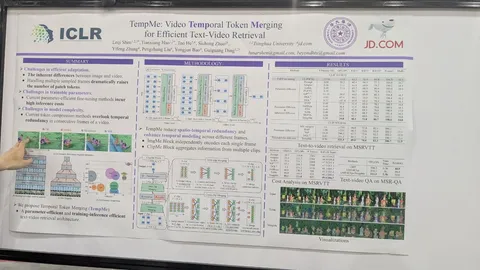
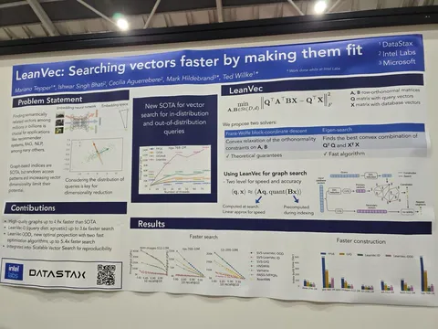
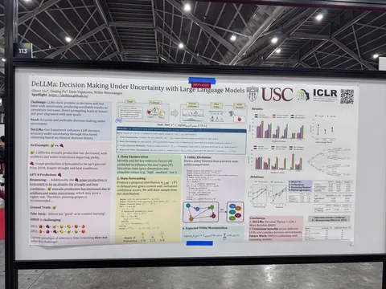

Наши инженеры вовсю изучают постеры на мероприятии и делятся самыми любопытными статьями.
TempMe: Video Temporal Token Merging for Efficient Text-Video Retrieval
Авторы предлагают хитро дообучить Clip для ускорения поиска по видео. Результаты:
— в 1,5-3 раза снижается количество вычислений для инференса, в зависимости от базового метода;
— качество ранжирования в сером плюсе
Приёмы:
— Используется LoRA для дообучения энкодера.
— Применяется специальная процедура усреднения похожих токенов, как по временной, так и по пространственной размерностям.
— Для улучшения такого усреднения используются дополнительные позишн-эмбеды.
— За счёт этого снижается количество обрабатываемых токенов и возникают более явные зависимости между кадрами по времени.
LeanVec: Searching vectors faster by making them fit
Авторы предлагают решение для ускорения процедуры поиска. Идея очень понятная и, возможно, много где реализована.
Собираем выборку запрос-документ, вычисляем матрицы A и B, преобразующие данные в меньшую размерность.
2. На этапе построения базы вычисляем Bx — получаем базу документов меньшей размерности и строим ANN (quant).
В процессе поиска делаем Aq, на основе которой из графа ищем ближайшие документы, а после уточняем кандидатов на этапе реранкинга по оригинальным векторам.
В статье приводят результаты экспериментов показывающие, что меньшая размерность может быть в 3-4 раза меньше исходной без значимой потери качества поиска. Плюс, полученное преобразование устойчиво к OOD.
Странно, что авторы не сравнили своё решение с подходом, использующимся при обучении многих SOTA-эмбеддингов: Matryoshka Representation Learning. В таком случае в модель уже встроены низкие размерности и не нужно ничего дополнительно обучать. По словам авторов, SOTA-библиотека от Intel, в которую они встроились, всё еще имеет всего 150 звезд на Github, так что теоретически идеи хорошие, а вот использовать ли их на практике — об этом стоит 10 раз подумать и самому оценить.
DeLLMa: Decision Making Under Uncertainty with Large Language Models
Авторы учат LLM принимать решения в условиях неопределённости. Они предлагают ввести лист состояний мира, который можно вывести из контекста и к которому, попарно для каждого state-action выводится функция полезности.
Постеры заметили
#YaICLR
ML Underhood
